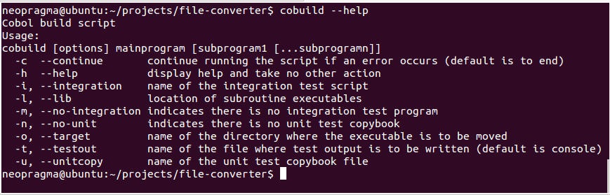
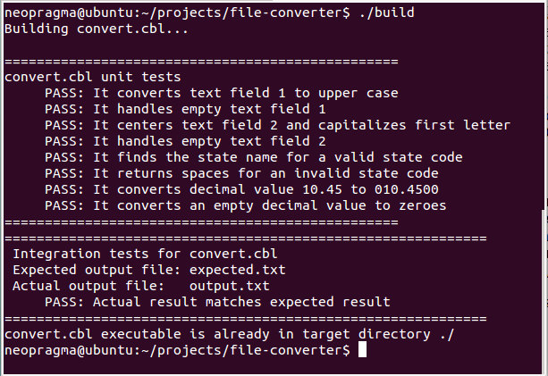

This is an Ubuntu Linux VM configured with GNU Cobol. It has no database installed, and is not meant to emulate mainframe Cobol precisely. The purpose is to provide a basic working environment for Cobol development that doesn't require connectivity to a mainframe system.
The build script for batch programs is called cobuild. It will be easier and quicker for you to read the source and run the script with different arguments than it would be to read a detailed description here. To see the usage help for the script, run it with the --help option:
cobuild --help
This produces output like the following:

In a nutshell, the cobuild script does the following:
If you have used Maven or Ant (or pretty much any build utility) on a Unix, Linux, or Windows platform, then you are familiar with the general sequence of steps.
Here is the output produced by cobuild when building one of the sample applications, the file converter (see https://github.com/neopragma/cobol-unit-test):

This is the way we run cobuild to build the sample program, convert.cbl:
cobuild -u convert-unit-tests -i ./integration-tests convert.cbl
We tell cobuild where to find our unit tests and integration tests, and we accept the default settings for all other options. When you explore the sample project you will see that convert-unit-tests is a Cobol copybook and integration-tests is a bash shell script that prepares a couple of files, calls a test program written in Cobol, and checks the result.
This environment can be used to develop Cobol applications to be deployed on Unix, Linux, Windows, or zOS platforms. It can also be used as an off-platform development and unit test environment for supporting existing "legacy" Cobol programs. You can do much of the coding and testing work for these applications on this environment and then upload your code to the mainframe system, where you need only do end-to-end functional testing and system-level testing such as performance testing.
<No modifications to the program under test are necessary to support integration testing, but the nature of the integration tests depends on just what the program does. For the file conversion example, projects/file-converter, an integration test runs a few representative input records through the conversion program and compares the actual output file with a file containing the expected output. A generic program that compares the contents of two sequential input files is provided in the file-converter project. You can use this program to prepare integration test scripts for any application program that has a similar function. For programs that do other sorts of processing, you will have to write a special integration test driver.
The integration test run is set up and managed by a shell script. The build script takes the name of the integration test script as an argument and executes it at the appropriate point in the build process.
A common type of Cobol program still in use in corporate IT departments is a batch program that reads one or more input files, converts the records into a different format, and writes them to output files or databases. The file-converter project contains a simple file conversion program and demonstrates how we can write automated unit tests and integration tests for such a program.
Dynamic Scripting is a feature of CICS that supports test-driven development of web applications targeted to the CICS environment (among other things). If your organization already has Dynamic Scripting installed, you can also use it to drive automated tests for legacy CICS applications written in any language. Refer to this IBM Redbook for more information: Introduction to CICS Dynamic Scripting.
IBM's Rational Developer tools include a unit testing framework for zOS. It supports unit testing of application programs targeted to various IBM environments, including CICS among others. It is expensive, heavy, complicated, and requires a separate server running Red Hat Enterprise Linux or Suse Enterprise Linux. It is functional, but not something that would support a rapid development workflow that includes frequent local builds and continuous integration.
Most legacy CICS applications are CRUD apps — they perform create, read, update, and delete operations on some data store, controlled by a user interacting with the application through a terminal. Another common type of CICS application is a "pipeline" application that processes transactions by handing off a data structure through a chain of programs via XCTL commands. A listener task is triggered when an inbound request arrives via some communication mechanism (TCP/IP socket, IBM 3600 Pipeline LU, etc.) and it initiates the chain of programs.
For these types of applications, we can write test programs that exercise the logic in production programs and verify they produce the correct results. The "unit" in this case is not a single paragraph, but a single CICS application program. When well designed, the individual programs in a CICS application will be fairly small and each will have a single purpose, making them well suited to unit testing.
The basic pattern for a test case is to initialize a COMMAREA, LINK to the program under test, and then compare the contents of the COMMAREA with the expected results. (To test programs in isolation that normally are invoked via XCTL, we can LINK to them.) Finally, we append the test results to a file that accumulates results from all of our test programs.
To enable this approach, the CICS application code has to be organized such that the "business logic" piece can be invoked via LINK without accessing any external resources; that is, without trying to interact with BMS, File Control, or any databases. Some legacy programs might have to be refactored and separated out into multiple programs — one that only maps data values to and from the screen area and issues BMS commands; one that encapsulates the "business logic," and one or more that interact with data stores. Once this is done, the test program can LINK to the "business logic" program without any side effects.
In addition, if we pass the names of any I/O interface programs in COMMAREA instead of hard-coding them, we have a quick-and-dirty "mocking" facility — we can prepare a fake I/O program that returns the values our test case requires, without the need to populate any real files or databases with test data.
The procedure we have described so far still involves running the tests in a live CICS region, which does not quite give us proper isolation for rapid turnaround of unit tests. To enable off-platform, isolated unit testing in a way that supports contemporary continuous integration work flows, we need to fake out the CICS runtime environment. In this sandbox environment, we accomplish this by using a custom-written EXEC CICS preprocessor that replaces CICS commands with calls to fake CICS modules. This sort of fake module is called a "test double." Test doubles are commonly used to isolate the code under test from external runtime dependencies.
This type of test uses 3270 terminal emulation to execute a scripted sequence of "user" actions against a CICS application. This level of testing does require real files and databases to exist and to be populated with appropriate test data.
There is little value in rolling your own terminal emulator. We recommend identifying an appropriate product to support this kind of testing for your CICS applications. Some alternatives (not exhaustive):
It is straightforward to write integration tests and acceptance tests using the same approach as described above for unit tests of CICS program. The difference between an integration test and a unit test is the scope of the code under test; a unit test exercises a single interaction with a single CICS program, while an integration test exercises a series of interactions that may involve multiple CICS programs and that may access real external resources. The mechanics of writing such a test program are the same as for unit tests.